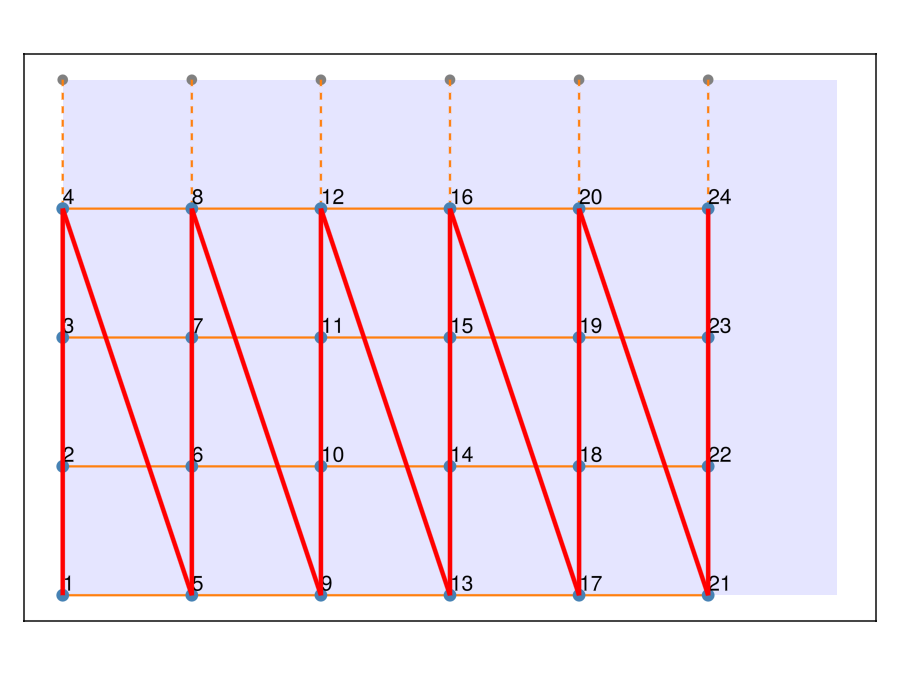
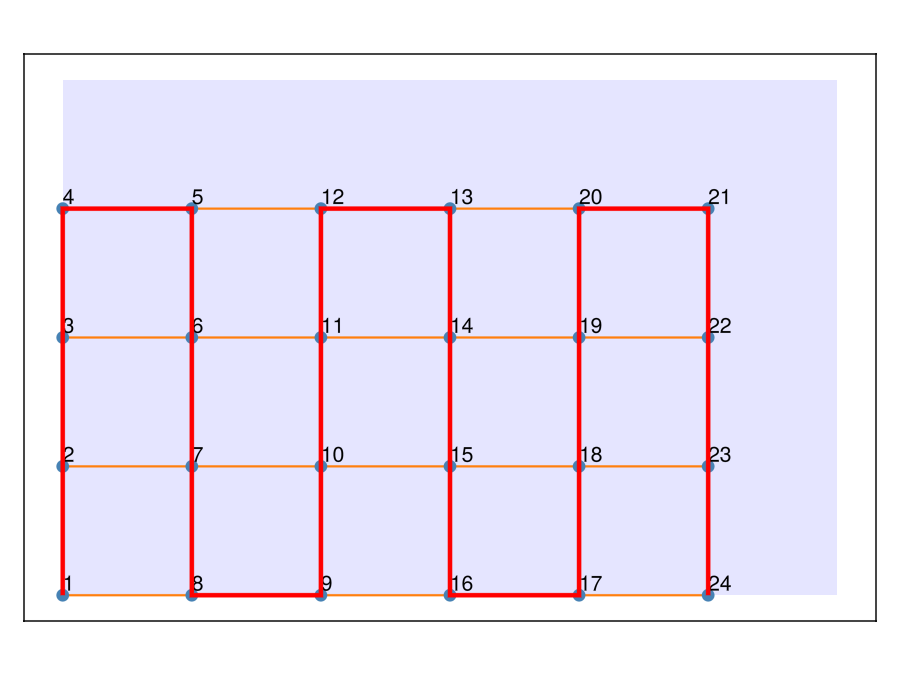
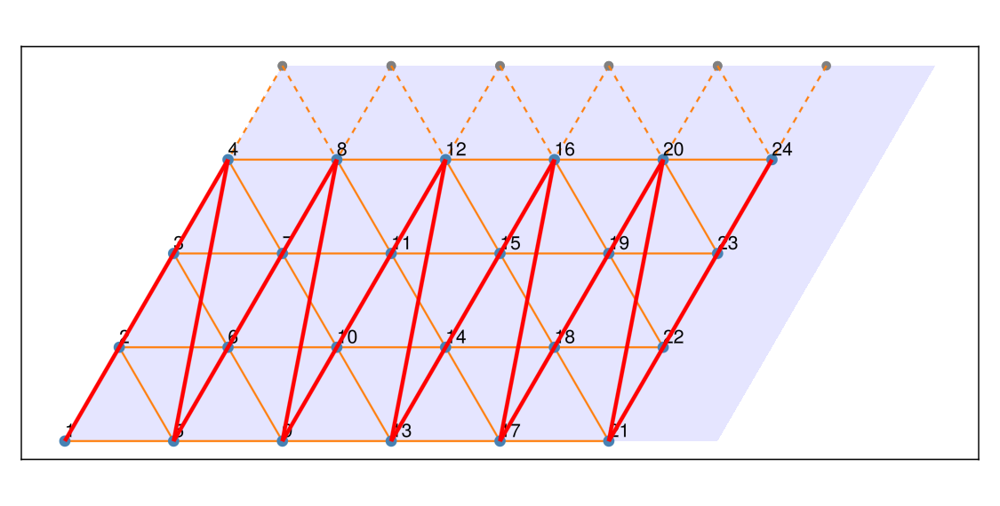
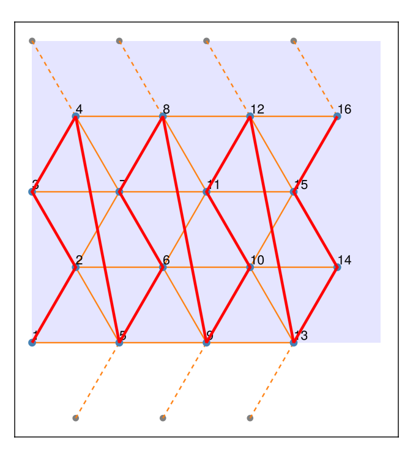
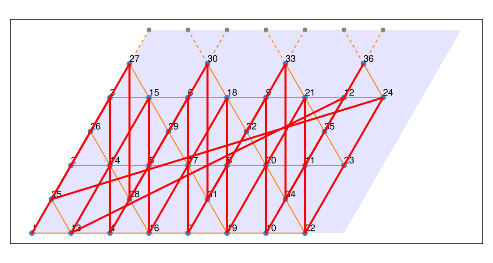
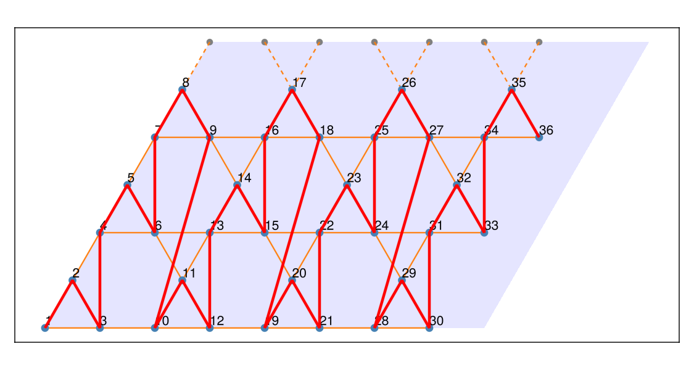

Site ordering for MPS
Matrix product state (MPS) methods such as DMRG require the sites of a two-dimensional cluster to be arranged along a one-dimensional path. The numbering of the sites in a FiniteLattice, and hence in the OpSum and the TOML file, is controlled by the bravais_order and atom_order keyword arguments. This page shows how to reproduce the conventional DMRG geometries and paths for the square, triangular, and kagome lattices.
Conventions
Two-dimensional DMRG calculations are usually performed on cylinders: the cluster is open along its longer direction and periodic along the shorter one [1]. In the standard construction [2], [4], [5], the cluster consists of $L_x \times L_y$ unit cells spanned by the primitive lattice vectors $\mathbf{e}_1$ and $\mathbf{e}_2$, with open boundary conditions along $\mathbf{e}_1$ and periodic ones along $\mathbf{e}_2$. The sites with the same index $n_1$ along $\mathbf{e}_1$ form a ring around the circumference. The MPS path then runs through the cylinder ring by ring: it visits all sites of the first ring, moves on to the next ring, and so on. DMRG represents interactions best that remain short-ranged along this path [1], and since every ring is closed, traversing all rings in the same direction keeps all bonds within a range of about the circumference. For clusters that are open in both directions, a snake path that reverses direction in every other column is commonly used instead.
For lattices with several bond directions, the cylinders are labeled by the orientation of the bonds relative to the cylinder axis [2], [3]: in a YC cylinder one of the bond directions runs along $y$, i.e. around the circumference, whereas in an XC cylinder a bond direction runs along the axis $x$. For the triangular and kagome lattices, the primitive vector $\mathbf{e}_2$ lies along a bond direction, so the construction above yields YC cylinders. The number in the label counts the circumference in lattice spacings, e.g. the kagome cylinder with $L_y$ unit cells around the circumference is called YC$2L_y$ [2], [5].
All examples below use a small helper that plots a finite lattice and draws the MPS path through the sites in the order in which they are numbered:
using Latlib
using GLMakie: Figure, Axis, DataAspect, lines!, Point2f, hidedecorations!
function plot_path(fl; size=(600, 450))
f = Figure(size=size)
ax = Axis(f[1, 1], aspect=DataAspect())
Latlib.plot(fl; ax=ax) # sites, bonds, and site numbers
path = [Point2f(v.coords) for v in atoms(fl)]
lines!(ax, path; color=:red, linewidth=3)
hidedecorations!(ax)
return f
endSquare lattice
A cylinder of the square lattice with length $L$ and circumference $W$ is open along $\mathbf{a}_1$ and periodic along $\mathbf{a}_2$. By default, the sites are ordered by their coordinates $(n_1, n_2)$ in the lattice basis, with $n_1$ varying slowest. For the square lattice this is exactly the conventional path: column by column along the cylinder, and from bottom to top around each ring.
L, W = 6, 4
cylinder = FiniteLattice(square, [L 0; 0 W], [false, true])
plot_path(cylinder)
For a cluster with open boundaries in both directions, the jump from the top of one column to the bottom of the next is avoided by a snake path. A custom ordering is a function order(a, b) that receives the Cartesian coordinates a and b of two sites as Vector{Float64} and returns true if a should come before b. The easiest way to write such a function is to compute a sort key for each site and compare the keys. Here, the key consists of the column index and the $y$ coordinate, whose sign is flipped in odd columns:
function order_snake(a::Vector{Float64}, b::Vector{Float64})
function key(x)
column = round(Int, x[1]) # columns are spaced by 1
return (column, iseven(column) ? x[2] : -x[2])
end
return key(a) < key(b)
end
strip = FiniteLattice(square, [L 0; 0 W], [false, false]; atom_order=order_snake)
plot_path(strip)
Triangular lattice
The predefined triangular lattice has the primitive vectors $\mathbf{a}_1 = (1, 0)$ and $\mathbf{a}_2 = (1/2, \sqrt{3}/2)$. The YC cylinder of $L_x \times L_y$ unit cells [3], [4] is open along $\mathbf{a}_1$ and periodic along the bond direction $\mathbf{a}_2$, so that the rings are chains of $L_y$ sites. It is obtained with the boundary matrix [Lx 0; 0 Ly], and the default ordering by $(n_1, n_2)$ already yields the ring-by-ring path:
Lx, Ly = 6, 4
yc4 = FiniteLattice(triangular, [Lx 0; 0 Ly], [false, true])
plot_path(yc4; size=(750, 380))
This is a YC4 cylinder in the notation of [3]. An XC cylinder, with the bond direction $\mathbf{a}_1$ along the axis, has the perpendicular circumference vector $\mathbf{t}_2 = W(2\mathbf{a}_2 - \mathbf{a}_1) = (0, W\sqrt{3})$. Its rings are zigzag chains of $2W$ sites that alternate between two neighboring columns spaced by $1/2$. The sort key (floor(x), y) groups these two columns together and orders the sites along the zigzag:
function order_zigzag(a::Vector{Float64}, b::Vector{Float64})
key(x) = (floor(x[1] + 1e-8), x[2])
return key(a) < key(b)
end
L, W = 4, 2
boundary = [ L 0; # t1 = L a1 = (L, 0)
-W 2W] # t2 = 2W a2 - W a1 = (0, W sqrt(3))
xc4 = FiniteLattice(triangular, boundary, [false, true]; atom_order=order_zigzag)
plot_path(xc4; size=(450, 500))
Kagome lattice
The kagome lattice has three atoms per unit cell. The predefined kagome lattice has the primitive vectors $\mathbf{a}_1 = (1, 0)$ and $\mathbf{a}_2 = (1/2, \sqrt{3}/2)$, both along bond directions, exactly as in Fig. 1 of [4]. The YC cylinder of $L_x \times L_y$ unit cells, open along $\mathbf{a}_1$ and periodic along $\mathbf{a}_2$, is therefore obtained directly with the boundary matrix [Lx 0; 0 Ly]. With $L_y = 3$ unit cells, i.e. six sites, around the circumference this is the YC6 cylinder of [4], [5] with $N = 3 L_x L_y$ sites:
Lx, Ly = 4, 3
yc6 = FiniteLattice(kagome, [Lx 0; 0 Ly], [false, true])
plot_path(yc6; size=(750, 400))
For lattices with a basis, the default ordering groups the copies of each atom of the unit cell together, which is not a useful path for an MPS. The conventional path instead goes through the columns of unit cells along $\mathbf{a}_1$, around the ring along $\mathbf{a}_2$, and through the three atoms of each unit cell, i.e. it sorts the sites by $(n_1, n_2)$ and the atom index. To write this ordering, we convert the Cartesian coordinates of a site back to the lattice basis with to_lattice_basis and split them into the unit cell indices $(n_1, n_2)$ and the position of the atom inside the unit cell:
function cell_and_atom(x::Vector{Float64})
c = to_lattice_basis(kagome, EuclideanVector(x)).coords
c = round.(c; digits=8) # remove floating point noise
n = floor.(Int, c) # unit cell indices (n1, n2)
frac = c .- n # atom position inside the unit cell
return n, frac
end
cell_and_atom(atoms(yc6)[5].coords)([1, 1], [0.0, 0.0])The sort key (n1, n2, frac...) compared lexicographically then yields the ring-by-ring path, with the three atoms of each unit cell next to each other:
function order_cells(a::Vector{Float64}, b::Vector{Float64})
function key(x)
n, frac = cell_and_atom(x)
return (n[1], n[2], frac...)
end
return key(a) < key(b)
end
yc6 = FiniteLattice(kagome, [Lx 0; 0 Ly], [false, true]; atom_order=order_cells)
plot_path(yc6; size=(750, 400))
The site indices of all interactions follow the chosen numbering, so the OpSum and the TOML file automatically refer to the MPS path:
H = neighbor_interaction("SdotS", "J", yc6)
H.ops[1:6]6-element Vector{Op}:
Op("SdotS", "J", [1, 2])
Op("SdotS", "J", [1, 3])
Op("SdotS", "J", [1, 8])
Op("SdotS", "J", [2, 3])
Op("SdotS", "J", [2, 4])
Op("SdotS", "J", [3, 10])toml = write_toml(yc6, H, "kagome-yc6.toml"; zero_based=true, return_string=true)
println(join(split(toml, "\n")[9:16], "\n")) # first entries of the Coordinates sectionCoordinates = [
[0.0, 0.0],
[0.25, 0.4330127],
[0.5, 0.0],
[0.5, 0.8660254],
[0.75, 1.29903811],
[1.0, 0.8660254],
[1.0, 1.73205081],Refs. [4], [5] add a partial column of sites at the open end of the cylinder to reduce boundary effects; here we use complete unit cells only. Cylinders that connect around the axis with a shift, such as the YC9-2 cylinder of [2], are obtained in the same way by adding a component along the axis to the periodic boundary vector.
Complete example
The following script puts the pieces together for the kagome lattice. It builds a YC4 cylinder with the unit-cell ordering, defines hopping and nearest neighbor interaction terms of an extended Hubbard model for the first and second neighbors, shows the MPS path, and writes the TOML file once the plot window is closed. Copy it to a file and run it with julia create_lattice.jl.
using Latlib
using Printf
using GLMakie: Figure, Axis, DataAspect, lines!, Point2f, hidedecorations!
L = 8
W = 2
boundary = [L 0; 0 W]
function cell_and_atom(x::Vector{Float64})
c = to_lattice_basis(kagome, EuclideanVector(x)).coords
c = round.(c; digits=8) # remove floating point noise
n = floor.(Int, c) # unit cell indices (n1, n2)
frac = c .- n # atom position inside the unit cell
return n, frac
end
function order_cells(a::Vector{Float64}, b::Vector{Float64})
function key(x)
n, frac = cell_and_atom(x)
return (n[1], n[2], frac...)
end
return key(a) < key(b)
end
function plot_path(fl; size=(600, 450))
f = Figure(size=size)
ax = Axis(f[1, 1], aspect=DataAspect())
Latlib.plot(fl; ax=ax) # sites, bonds, and site numbers
path = [Point2f(v.coords) for v in atoms(fl)]
lines!(ax, path; color=:red, linewidth=3)
hidedecorations!(ax)
return f
end
fl = FiniteLattice(kagome, [L 0; 0 W], [false, true]; atom_order=order_cells)
H = OpSum()
H += neighbor_interaction("Hop", "T1", fl; num_distance=1)
H += neighbor_interaction("Hop", "T2", fl; num_distance=2)
H += neighbor_interaction("NN", "V1", fl; num_distance=1)
H += neighbor_interaction("NN", "V2", fl; num_distance=2)
f = plot_path(fl; size=(750, 400))
wait(display(f))
filename = @sprintf "kagome.YC%i.L.%i.W.%i.t1t2v1v2.toml" 2W L W
write_toml(fl, H, filename)References
- E. M. Stoudenmire and S. R. White, Studying Two-Dimensional Systems with the Density Matrix Renormalization Group, Annu. Rev. Condens. Matter Phys. 3, 111 (2012), arXiv:1105.1374.
- S. Yan, D. A. Huse, and S. R. White, Spin Liquid Ground State of the S=1/2 Kagome Heisenberg Model, Science 332, 1173 (2011), arXiv:1011.6114.
- Z. Zhu and S. R. White, Spin liquid phase of the S=1/2 J1-J2 Heisenberg model on the triangular lattice, Phys. Rev. B 92, 041105 (2015), arXiv:1502.04831.
- X.-Y. Jia, W. Huang, D. N. Sheng, and S.-S. Gong, Emergent Fermi-Liquid-Like Phase by Melting a Holon Wigner Crystal in a Doped Mott Insulator on the Kagome Lattice, Chin. Phys. Lett. 43, 030706 (2026), arXiv:2511.22067.
- H.-C. Jiang, T. Devereaux, and S. A. Kivelson, Holon Wigner Crystal in a Lightly Doped Kagome Quantum Spin Liquid, Phys. Rev. Lett. 119, 067002 (2017), arXiv:1702.06577.